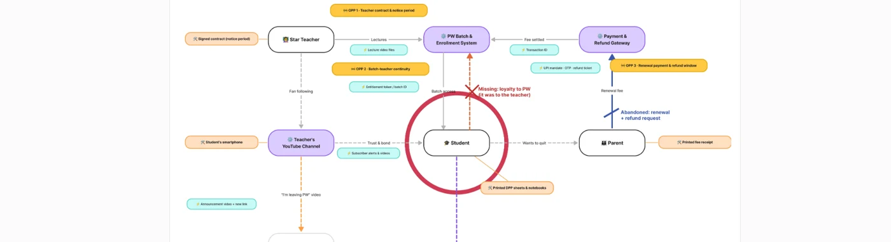

01
Sectoral ecosystem canvas
Franco Malerba’s four building blocks of a sectoral system of innovation, applied to PW.
Platform & domain
PhysicsWallah (PW), an EdTech platform for JEE and NEET prep: online batches, offline centres, recorded lectures.
Core workflow
A student joins a batch taught by a teacher, attends live and recorded classes, and the family pays and renews every year.
The question
What happens to this workflow when the teacher the student joined for leaves mid-year?
Block 1
Knowledge & technology base
Learning tools
Live and recorded classes, practice sheets (DPPs), online tests, doubt chat.
Platform core
An app that links each student to a batch, a teacher and a timetable.
Payments & identity
UPI and AutoPay for fees, OTP for refunds, APAAR and DigiLocker for records.
Learning curves
Teachers take years to build a YouTube following. AI tutoring is new. Centres still use paper registers.
Block 2
Actors & networks
Competitors
Unacademy, Vedantu, Allen, Aakash. BYJU’S still shapes how parents see edtech.
Startups & tools
AI doubt-solvers, test-prep apps, teachers selling their own courses.
On the ground
Centre managers, counsellors and callers. Star teachers with their own audience.
Suppliers
Payment gateways, UPI apps, loan providers, video streaming.
Others
Parents, students, exam bodies like NTA, regulators, consumer forums.
Block 3
Institutions & governance
Laws
Consumer Protection Act 2019 covers refunds and false claims. DPDP Act 2023 needs a parent’s consent for a child’s data.
Coaching & payment rules
The 2024 coaching guidelines include fee refunds. RBI rules cover auto-pay.
Standards
UPI (NPCI) for payments; APAAR and DigiLocker for records.
Unwritten norms
Students follow a teacher, not a company. Teachers announce a move on their own channel. Families avoid switching in an exam year.
Block 4
Demand & selection
Users
Class 11–12 students and droppers for JEE and NEET, many from small towns. A parent pays.
How they buy
One yearly fee upfront, by UPI, auto-pay or a loan. Price-sensitive.
What gets in the way
Weak internet, Hindi and regional languages, paper attendance at centres.
Switching
Teacher first, platform second. Leaving mid-year can cost a year; following a teacher to another channel is free.
Fears
Mis-selling or a refused refund (as with BYJU’S), losing the year, misuse of a child’s data.
Where the system strainsMoving is one click, the teacher’s audience sits outside PW, the rules cover refunds but not loyalty, and families pick the teacher first. That is why “teacher left” hurts.
02
Actor action cards
Six actors around the failure point: a star teacher leaves mid-year and students stop renewing. Three human, three non-human.
HumanStudent
“I joined for my teacher, not for PW. If Sir leaves mid-year, I may lose the year.”
OPP gateStay in a paid batch taught by the same teacher who brought them in.
ArtifactsM Printed DPPs, notebooks, centre ID card
D Enrollment ID, watch, doubt and test history
Failure actionStops attending, skips renewal, asks for a refund and follows the teacher.
HumanParent / Guardian
“I paid for the teacher my child trusts. If they’re gone, PW broke its promise.”
OPP gateRenews only if the child still wants the batch and there’s a clear refund path.
ArtifactsM Printed fee receipt, batch brochure
D UPI reference, invoice, education-loan e-sign
Failure actionRefuses next year’s fee, demands a refund, complains online.
HumanStar Teacher
“Students come for me. PW earns the revenue, but I bring the audience.”
OPP gatePay, creative control and notice period stay acceptable, or they exit.
ArtifactsM Signed contract, studio whiteboard
D Lecture files, PW login, own YouTube and Telegram
Failure actionLeaves mid-year, announces it on their channel, takes the fans to a rival.
Non-humanPW Batch & Enrollment System
“Treats a batch as a product. It can swap a teacher in one click, but not the students’ trust.”
OPP gateA paid entitlement plus an assigned teacher for every class.
ArtifactsM Centre attendance register
D Entitlement token, batch ID, schedule, “teacher changed” push
Failure actionSilent swap → timetable gaps and confusion → churn. Renewal reminders ignored.
Non-humanPayment & Refund Gateway
“Only sees transactions. A refund is a rule check, not a relationship.”
OPP gateA verified UPI mandate and OTP; refunds only inside the policy window.
ArtifactsM Printed invoice
D Transaction ID, autopay mandate, OTP log, refund ticket
Failure actionAutopay cancelled, refund denied → chargeback and complaints.
Non-humanTeacher’s YouTube Channel
“The channel, not PW, holds the audience, and the algorithm follows the teacher.”
OPP gateThe teacher owns the channel and its subscribers.
ArtifactsM Student’s smartphone
D Subscriber list, alerts, “I’m leaving PW” video, new-batch link
Failure actionOne video moves the whole fan base to a rival overnight.
M material artifact · D digital artifact · OPP the condition an actor needs before it will take part
03
Present horizon map
The 2026 value network for “my favourite teacher left”, with actor-network layers on top.

Open full size ↗